arrow_back
Utworzenie nowej gry
Po naciśnięciu przycisku „START GRY” powinna zostać załadowana podstrona zawierająca ustawienia rozgrywki. Na
niej znajdziemy następujące sekcje:
- Nagłówek „PLANSZA” oraz dwa przyciski pod nim
- Nagłówek „CZAS GRACZA” oraz trzy przyciski pod nim
- Nagłówek „GRACZ 1” oraz nagłówek „GRACZ 2” oraz trzy przyciski pod nimi
- Przycisk startu „ZACZYNAMY!”
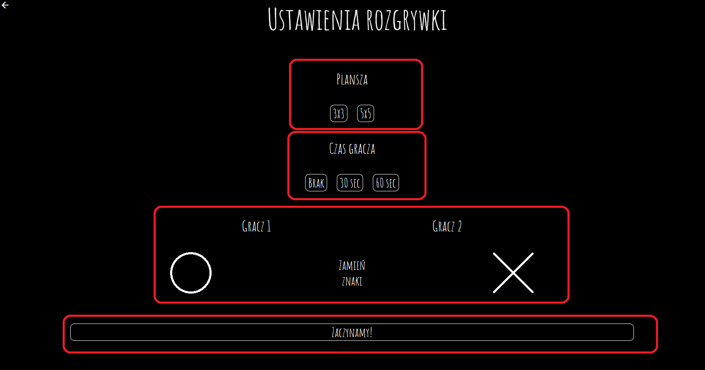
Przyciski „3x3” oraz „5x5” odnoszą się do rozmiaru planszy na jakiej będzie toczyła się rozgrywka.
Jest to ilość kolumn planszy x ilość wierszy planszy. Plansza 3x3 będzie miała 9 pól, plansza 5x5 – 25 pól.
Gdy użytkownik nie wybierze żadnej z opcji zostanie ustawiona domyślnie – plansza standardowa 3x3.
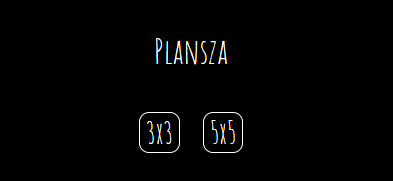
Czas gracza: przyciski definiują łączną ilość czasu na wszystkie tury dla poszczególnego gracza. W przypadku
naciśnięcia przycisku ,,BRAK" czas na podjęcie decyzji będzie nieograniczony. Przycisk „30 SEC” ustawia czas
30 sekund na wszystkie tury gracza 1 i osobno dla gracza 2. Przycisk „60 SEC” ustawia czas 60 sekund. Gdy
użytkownik nie wybierze żadnej z opcji zostanie ustawiona domyślnie – czas nieograniczony.
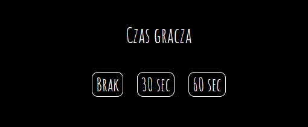
Wybór znaku: daje możliwość wyboru, który gracz będzie stawiał kółko, a który krzyżyk. Pod napisami "GRACZ 1"
i "GRACZ 2" znajduje się informacja o znakach jakie obecnie są przypisane poszczególnym graczom. Aby
zamienić znaki należy nacisnąć przycisk leżący pomiędzy tymi symbolami "ZAMIEŃ ZNAKI". Należy zwrócić uwagę,
że gra zaczyna się od tury gracza 1 niezależnie od wybranego znaku.
Przycisk startu: Gdy ustawienia zostały skonfigurowane według potrzeb graczy lub zostały domyślne, w celu
rozpoczęcia gry należy nacisnąć przycisk "ZACZYNAMY!".
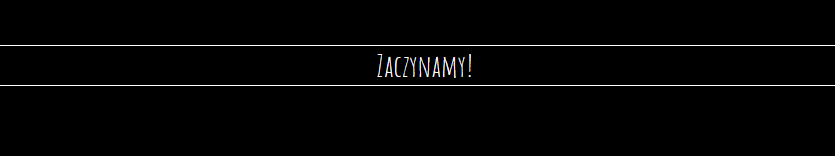
Przeprowadzenie rozgrywki
Na stronie rozgrywki znajdują się dwa przyciski, dwa liczniki czasu, dwa licznik punktacji, interaktywna
plansza oraz tekst wskazujący, którego gracza tura trwa.
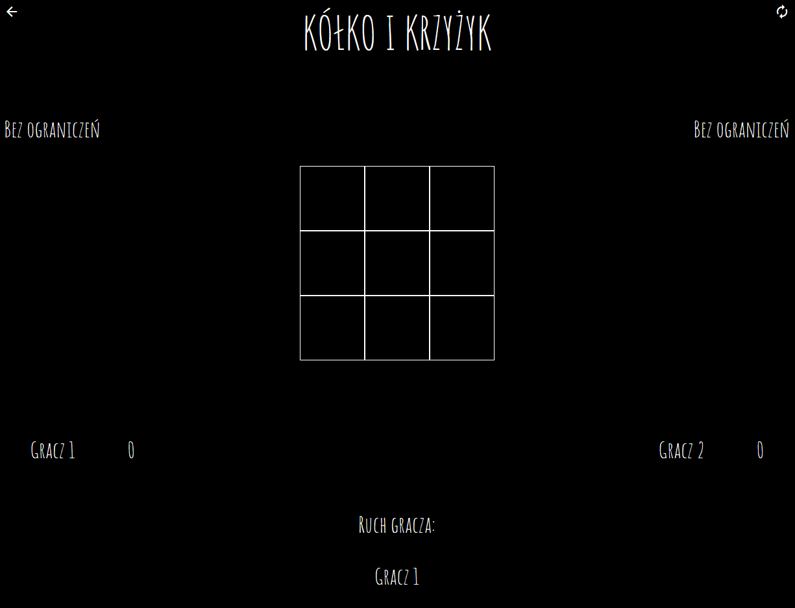
Przyciski umieszczone w górnych rogach strony. Przycisk po lewej stronie w kształcie strzałki służy do
cofnięcia się do poprzedniej strony. Przycisk po prawej stronie służy do zresetowania stanu rozgrywki.
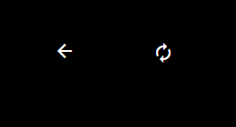
Niżej, odpowiednio po lewej i prawej stronie znajdują się liczniki czasu. W przypadku ustawienia
nieograniczonego czasu, w te miejsce pojawi się napis „BEZ OGRANICZEŃ”. W innym przypadku, pokazują one ile
czasu pozostało graczom na wykonanie swoich ruchów.
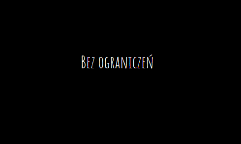
Na dole, w rogach wyświetlone są nazwy graczy i przypisane do nich liczby mówiące o ilości wygranych meczy,
rozegranych bez powrotu do menu lub opcji.
Niżej, odpowiednio po lewej i prawej stronie znajdują się liczniki punktacji. Przy napisie
„GRACZ 1” jest liczba, która mówi o ilości wygranych rund podczas jednej rozgrywki, czyli bez powrotu do
menu. Przy napisie „GRACZ 2” – identycznie, lecz dla gracza numer 2.
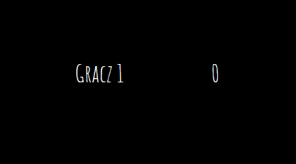
Na środku strony znajduje się interaktywna plansza. Gracze po kolei stawiają na niej przypisane im znaki,
odpowiednio ten gracz, którego tura trwa w tym momencie (patrz: punkt 3.5). Wygrywa gracz, który stworzy
linię poziomą, pionową lub ukośną, zrobioną z trzech takich samych znaków, które są do niego przypisane.
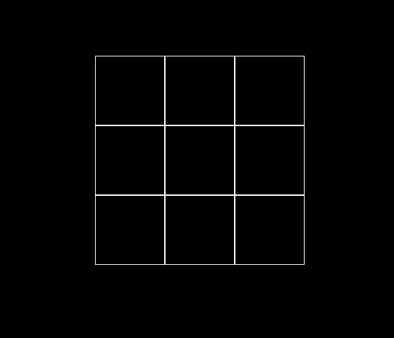
Na środku strony, na samym dole znajduje się wskaźnik tury gracza. Numer gracza tam wpisany oznacza, że teraz
ma odbyć się ruch tego gracza. W przypadku ustawienia limitu czasowego, dopóki trwa tura danego gracza, czas
jest odliczany.
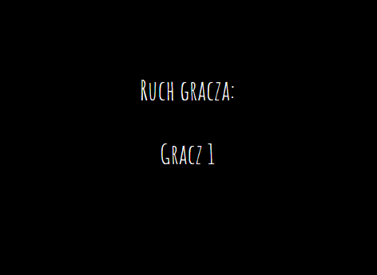
Po zakończeniu rundy plansza znika, a na jej miejscu pojawia się informacja o remisie lub o tym, który gracz
wygrał tę rundę. Bez względu na rezultat, po naciśnięciu „TAK!” rozpoczyna się kolejna runda gry. Zasady
pozostają te same, jak ostatnio ustalone przez graczy.
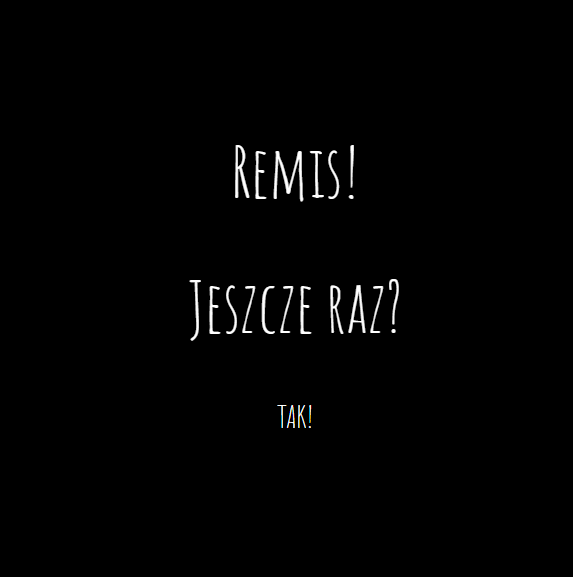